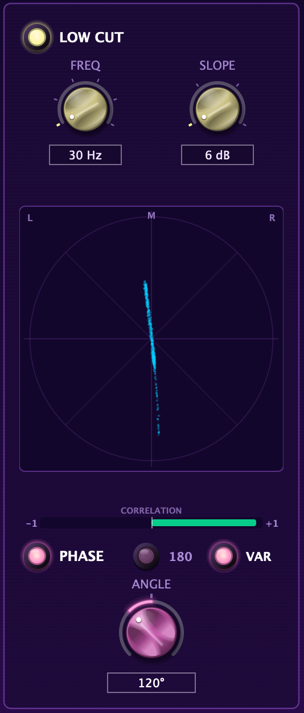

Download the PDF
Anti-Music
PINK
SPIDER
Console preamp → FET limiter → A/D → analog harmonics.
User manual
Welcome
Thanks for testing Pink Spider
Pink Spider is the channel you put first on every track: a console preamp, a tube stage, two limiters and a converter, then four analog colours. Think of it as plugging each track into a great console before it hits your DAW.
What you get
| Computer | Formats |
|---|
| Mac | VST3 and Audio Unit
macOS 11 or newer, Apple Silicon or Intel |
| Windows | VST3
Windows 10 or 11, 64-bit |
Works in Logic Pro, GarageBand, Ableton Live, Cubase, Reaper, Studio One, Bitwig, FL Studio and other VST3 / AU hosts. The Pro Tools (AAX) version comes later.
This is a beta
Pink Spider is close to finished, but not quite. Things may break or change between versions. Please tell us about anything odd, however small: see Report a bug.
2
Chapter 1
1Install
Download the installer for your computer from the Releases page, then follow the steps below. It takes about a minute.
On a Mac
File: Pink-Spider-<version>-macOS.pkg
- Quit your DAW.
- Double-click the installer.
- If macOS says it can't be opened or Apple could not verify it, click Done. Then open System Settings → Privacy & Security, scroll down to the message about the Pink Spider installer, and click Open Anyway. Enter your password and click Open.
- Follow the installer. It installs both the VST3 and the Audio Unit. Click Customize if you only want one.
- Open your DAW and look for Pink Spider under Anti-Music.
Why the warning?Beta installers aren't signed by Apple yet, so macOS asks you to confirm. That's expected, and it only happens the first time. On macOS 12 and earlier, you can instead right-click the installer and choose Open.
The plugins go to /Library/Audio/Plug-Ins/VST3/Pink Spider.vst3 and /Library/Audio/Plug-Ins/Components/Pink Spider.component.
3
On Windows
File: Pink-Spider-<version>-Windows-Setup.exe
- Quit your DAW.
- Double-click the installer.
- If you see "Windows protected your PC", click More info, then Run anyway.
- Click Yes to allow changes, accept the beta licence, then click Install.
- Open your DAW and rescan plugins if it doesn't do it automatically. Pink Spider is listed under Anti-Music.
Why the warning?The beta installer isn't signed yet, so Windows SmartScreen asks before running it. That's expected.
The plugin goes to C:\Program Files\Common Files\VST3\Pink Spider.vst3, the standard folder every Windows DAW checks.
Updating to a newer beta
Just run the new installer. It replaces the old version, and your sessions keep their Pink Spider settings.
Rescanning in your DAW
| DAW | What to do |
|---|
| Ableton Live | Settings → Plug-Ins → turn on Use VST3 Plug-In System Folders, then Rescan. |
| Logic Pro / GarageBand | Restart. Logic checks new Audio Units on launch. |
| Reaper | Preferences → Plug-ins → VST → Re-scan. |
| FL Studio | Options → Manage plugins → Find plugins. |
| Cubase, Studio One, Bitwig | Restart. They scan on launch. |
4
Chapter 2
2Quick start
Sound in thirty seconds.
- Put Pink Spider on a track, first in the chain. When it opens, it does nothing to your sound: everything starts off or neutral.
- Add colour. Turn TRIODE or TAPE up to about 4.
- Thicken it. Light FATTER for a warmer, fuller middle.
- Drive the preamp. Click GAIN to More, then pull LEVEL down until it's as loud as before.
- Control it. Light FET LIMIT for 1176-style attitude.
Hear what it's doingClick the round lens next to SPIDER or HARMONIC PROCESSING to switch that whole section off and on.
How the sound flows
The Spider section
INPUT
→
PHASE
→
GAINpreamp
→
LEVEL
→
LOW CUT
→
FATTER
→
BRICK WALL
→
FET LIMIT
→
A/D
Harmonic processing
IRON
→
TRIODE
→
PENTODE
→
TAPE
→
TILT EQunless PRE
→
OUTPUT
- LEVEL comes before the limiters and the A/D. It decides how hard you hit FET LIMIT, BRICK WALL and the converter. Turning LEVEL up means more limiting, not only more volume.
- The four harmonic colours come after the converter, like an outboard box on the insert.
- The tilt EQ runs last. Light PRE to put it first instead.
5
Chapter 3
3A tour of the window
Everything is on one screen.
A
B
C
D
E
F
ATop bar
Your track name on console tape.
BLow cut & phase
Clean up the lows and line up your mics.
Chapter 4.
CSpectrum display
See your sound, and tilt its tone.
Chapter 5.
FA/D meter & lights
Converter level, CLIP, OVER and the BRICK WALL switch.
Chapter 9.
Handy everywhere
- Drag a knob up or down to turn it, or click its value box to type a value. Double-click a knob to reset it.
- A lit lens means on. The lens next to a section's title switches the whole section.
- Every copy keeps its own settings, and latency is only a few samples, so use one on every track and record through it.
6
Chapter 4
4Low cut & phase
Clean up the bottom end, and make two mics on one source work together.

1
2
3
4
5
6
7
8
1LOW CUT
Switches the low cut in or out. It starts out.
2FREQ
Where it cuts: 30, 50, 80, 100, 160 or 300 Hz.
3SLOPE
How steeply: 6, 12, 18 or 24 dB per octave. Bigger numbers cut harder.
4Phase scope
Your stereo image. A vertical line is mono. Spread sideways is wide. Lying flat means out of phase: hollow, and it can vanish in mono.
5CORRELATION
+1 is mono and safe, around 0 is very wide, left of centre is out of phase.
6PHASE
Switches the phase section in or out.
7180 / VAR
180 flips the waveform upside down. VAR rotates the phase by the ANGLE knob. Picking either switches PHASE on.
8ANGLE
0° to 360°, in VAR only. It clicks into place at 180°.
Try thisLow cut: vocals 80–100 Hz at 12 dB, guitars 80 Hz, overheads 160 Hz. Two mics on one source: try 180, or pick VAR and sweep ANGLE until the low end sounds fullest.
7
Chapter 5
5Display & tilt EQ
See the frequencies in your sound, and tilt the whole tone brighter or darker with one gesture.
1Spectrum
Lowest bass on the left, highest treble on the right. Faint purple is your sound before Pink Spider, bright blue is after.
2RTA label
Click it to switch between IN + OUT, IN, OUT and OFF.
3PRE
Moves the tilt EQ to the start of the chain, so it changes what goes into the preamp and harmonics.
4Tilt amount
Shows while the tilt isn't flat, with the curve drawn over the spectrum.
Using the tilt EQ
The tilt EQ works like a seesaw around 500 Hz: when the treble goes up, the bass goes down, and the other way round. Up to ±6 dB at each end.
| Do this | Result |
|---|
| Hold Shift and drag up on the spectrum | Brighter: more treble, less bass |
| Hold Shift and drag down | Darker: more bass, less treble |
| Right-click the spectrum → Reset Tilt | Back to flat. It also clicks into place at flat as you drag. |
Try thisA slightly darker tilt with PRE lit makes the preamp and harmonics distort more smoothly, with less fizz.
8
Chapter 6
6The Spider section
The console channel: a preamp, a level control and a tube stage, feeding the limiters and the converter.
1SPIDER
Switches the whole section in or out. While it's out, the panel greys over; low cut, phase and harmonics keep working.
2GAIN
The console preamp. Five clicks, from 6 to 66. Starts at Unity.
3LEVEL
The channel output, −60 to +12 dB. Sets how hard the limiters and the A/D are hit.
4FATTER
A tube stage: thicker and warmer, mostly 2nd harmonic. Quiet parts stay clean, loud parts get fatter.
5FET LIMIT
An 1176-style limiter in front of the converter.
Chapter 7.
GAIN
| Position | 6 | Less | Unity | More | 66 |
|---|
| Into the preamp | −30 dB | −15 dB | no change | +15 dB | +30 dB |
GAIN up, LEVEL downMore GAIN drives the preamp, FATTER, the limiters and the converter harder. Turn LEVEL down by about the same amount so you're comparing tone, not loudness. Switching GAIN never clicks or jumps.
9
Chapter 7
7FET LIMIT
A limiter modelled on the classic 1176 "blue stripe", set up the way many engineers love it, and placed right in front of the converter.
| Setting | Value | What you hear |
|---|
| Ratio | 20:1, always | Full limiting. It holds the level firmly. |
| Attack | Slowest (about 800 µs) | The front of each hit punches through before it clamps. |
| Release | Fastest (50 ms) | Lively and aggressive. It stretches a little, to about 120 ms, when it's limiting hard and long. |
| Where it starts | About −3 dBFS | Keeps the converter from going over. |
How to use it
- Light FET LIMIT.
- Turn LEVEL up. The more you push, the harder it grabs.
- For more attitude, click GAIN to More as well.
- Switch it off and on to compare at the same loudness.
What it does to the sound
- Like the real one, it is a feedback design: it listens to its own output, so the first moment of a peak gets through before it clamps.
- As it limits harder, the FET adds a little 2nd harmonic, the warm edge the 1176 is known for.
- The fast release rides low notes slightly, which adds growl on bass and drums.
Great onVocals, bass, room mics and drum busses.
FET LIMIT or BRICK WALL?FET LIMIT is the sound: colour and squash.
BRICK WALL is the safety net: it just catches peaks. You can use both. BRICK WALL is switched from the light under the meter: see
Chapter 9.
10
Chapter 8
8Harmonic processing
Four analog colours after the converter, in this order: iron, triode, pentode, tape. Use one, or stack them.
1HARMONIC PROCESSING
Switches all four in or out together.
2IRON
An input transformer: thicker, tighter lows while the highs stay open. For kick, bass, anything that needs weight.
3TRIODE
Warm, round and fat (even harmonics). For vocals, acoustic guitar, anything thin.
4PENTODE
Brighter, more detail, a bit of squash (odd harmonics). For vocals that need to cut, snare, guitars.
5TAPE
Tape saturation: the highs soften first, with a low-end bump. For drums, busses, taming harsh sources.
How far to turn them
| Knob | OFF | 1 to 3 | 4 to 6 | 7 to 10 |
|---|
| Sounds | Fully left, clicks in | Subtle: you feel it | Clearly coloured | Heavy, into distortion |
No oversThese four never cause an over. Pushing them makes the sound denser and louder, but peaks stay below full scale.
11
Chapter 9
9Meter & lights
The level hitting the converter, and three lights that tell you when to back off.
1 · The A/D meter
Shows the peak level going into the converter, in dBFS, for each channel. Green is healthy. Yellow is getting hot. The top segment, OVR, means a digital over.
The lights
2 · CLIP
The preamp is being pushed past its headroom. Click GAIN down a step.
3 · BRICK WALL
This light is also a switch. Click it to turn the brick-wall peak limiter on or off.
offonlimiting right now
4 · OVER
The signal went over full scale at the converter. Turn LEVEL down, or light FET LIMIT or BRICK WALL.
BRICK WALLA fast peak limiter that catches peaks just below full scale, linked across both channels so the stereo image doesn't shift. Use it as a safety net when tracking hot.
12
Chapter 10
10Sounds to try
Starting points. Begin from the defaults (double-click knobs to reset), set these, then adjust to taste.
Lead vocal
Present, controlled, warm
LOW CUT 80 Hz / 12 dBGAIN MoreLEVEL down to matchFET LIMIT onTRIODE 3PENTODE 2
Bass
Weight and growl that sits
GAIN MoreFATTER onIRON 4TAPE 3FET LIMIT on
Kick
Tight low end, safe peaks
IRON 5TRIODE 3BRICK WALL on
Snare
Crack and body
PENTODE 4TAPE 3Bottom mic 180
Acoustic guitar
Full without the boom
LOW CUT 100 HzTRIODE 3TILT a little brighter
Electric guitar
Bite and glue
LOW CUT 80 HzPENTODE 3TAPE 2
Smashed room
Drum room mics, parallel crush
GAIN MoreFET LIMIT onLEVEL up until it pumpsTAPE 4
Mix bus
Gentle glue and colour
GAIN UnityIRON 2TAPE 2 to 3TILT to taste
13
Chapter 11
11Troubleshooting
Most problems have a quick fix.
| Problem | Fix |
|---|
| Pink Spider doesn't show up in my DAW | Restart the DAW and rescan plugins (see Install). In Logic: Logic Pro → Settings → Plug-in Manager, select Pink Spider, Reset & Rescan Selection. |
| The Mac says the installer can't be opened, or is damaged | Use Open Anyway in System Settings → Privacy & Security. If it still refuses, run this in Terminal, then open the installer again:
xattr -d com.apple.quarantine ~/Downloads/Pink-Spider-*-macOS.pkg |
| It's louder or quieter than without it | Set GAIN to Unity and LEVEL to 0 dB. With FATTER, both limiters and the four harmonic knobs off, Pink Spider doesn't change your sound. |
| It sounds distorted | Watch the CLIP and OVER lights. Click GAIN down a step, lower LEVEL, or turn the harmonic knobs down. |
| The BRICK WALL light is red all the time | It's limiting constantly. Turn LEVEL down until it only flashes red on peaks. |
| Where's the Pro Tools version? | Not in this beta. The AAX version needs to be signed first. It's coming. |
Uninstall
MacIn Finder, choose Go → Go to Folder… and delete:
/Library/Audio/Plug-Ins/VST3/Pink Spider.vst3
/Library/Audio/Plug-Ins/Components/Pink Spider.component
WindowsOpen Settings → Apps → Installed apps, find Pink Spider (Anti-Music) beta, and click Uninstall.
14
Chapter 12
12Report a bug
Thank you for testing. Please report everything, even small things. That's what the beta is for.
For bugs, please include
- Your computer (Mac or Windows) and its OS version
- Your DAW and its version
- The Pink Spider version (it's in the installer's file name)
- What you did, what you expected, and what happened
- A screenshot or short recording, if you can
- If your DAW crashed, its crash report, if it made one
Now go make it sound expensive.
Pink Spider © 2026 Anti-Music · Beta software, provided as is. See the licence in the installer.
Built with JUCE. VST is a trademark of Steinberg Media Technologies GmbH. Permanent Marker font by Font Diner (Apache 2.0).
Crane Song, Spider, HEDD, UREI and 1176 are trademarks of their owners, mentioned only to describe the style of processing.
Pink Spider is not affiliated with or endorsed by them.
From Canada with love
15